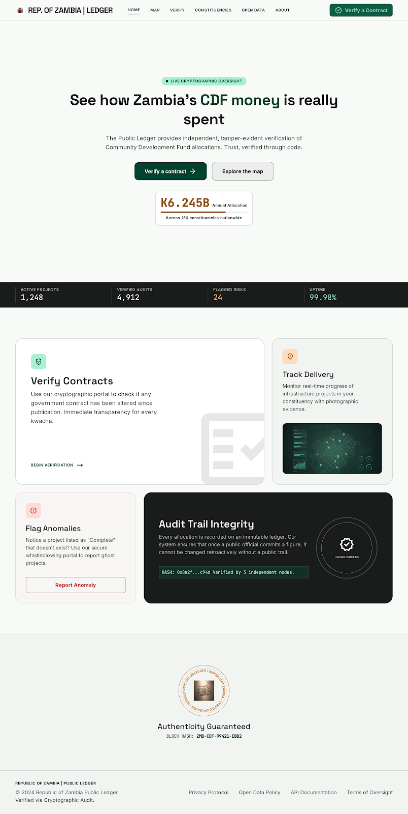
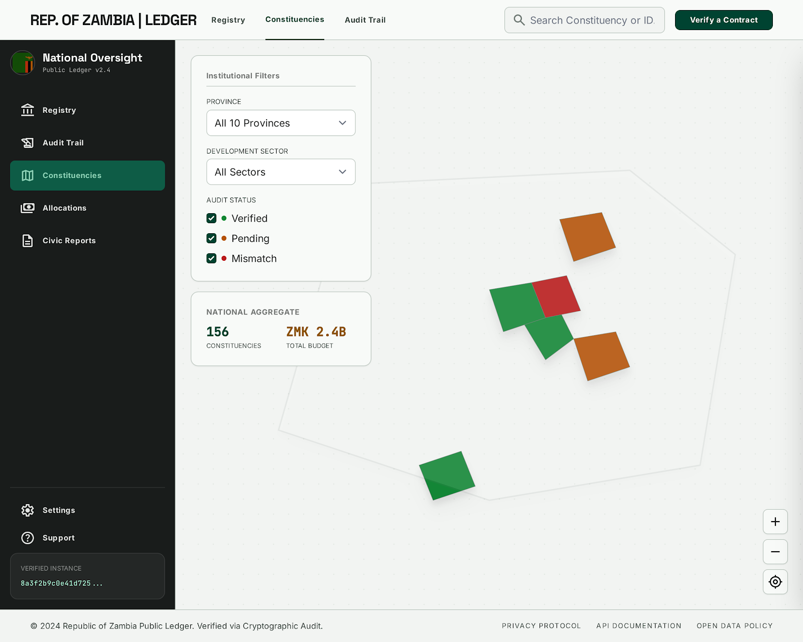
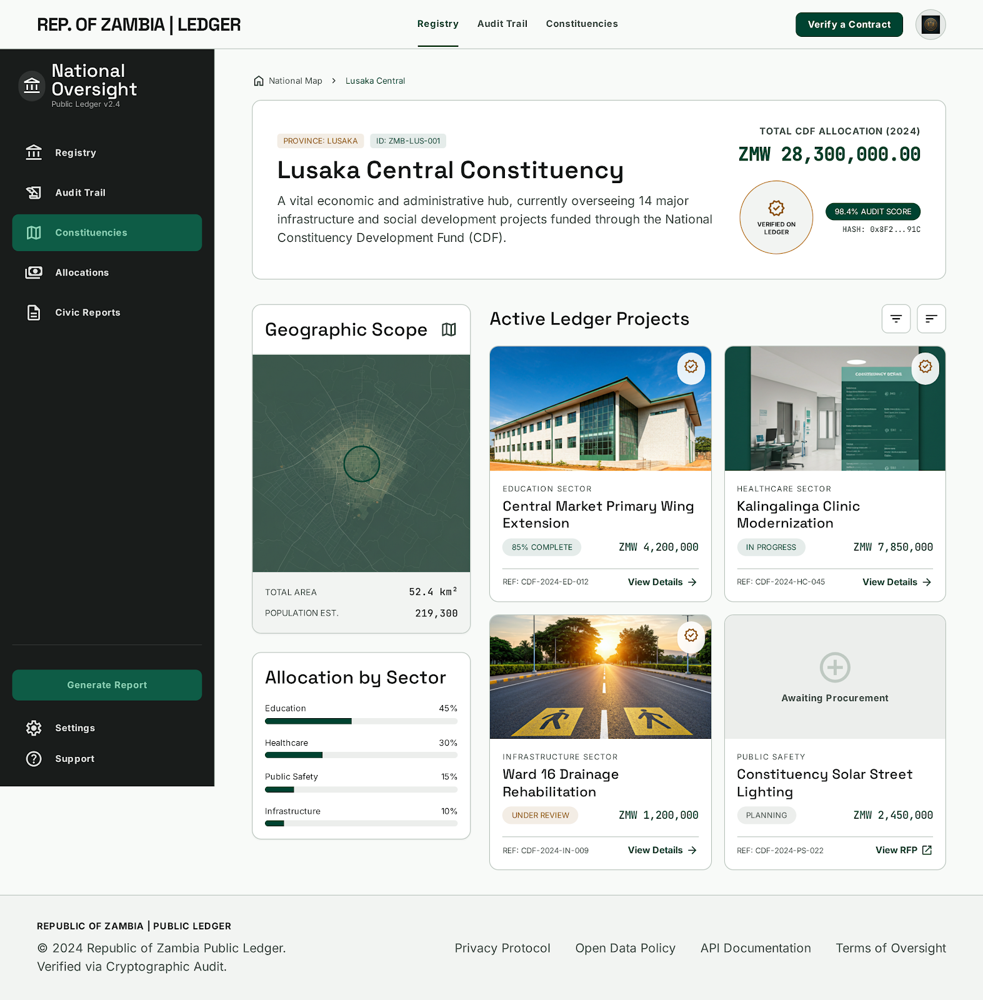
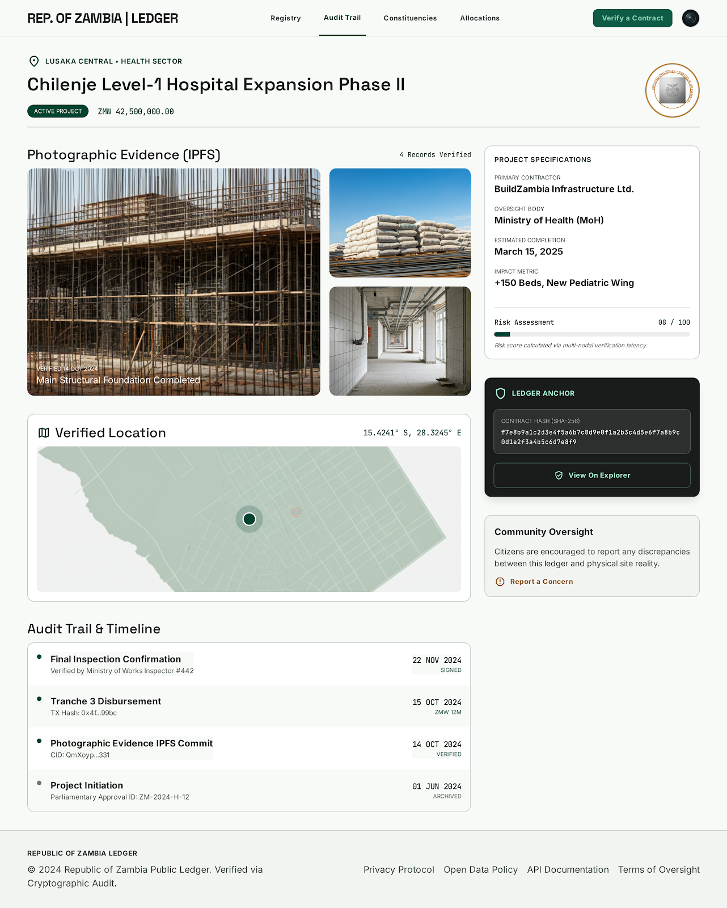
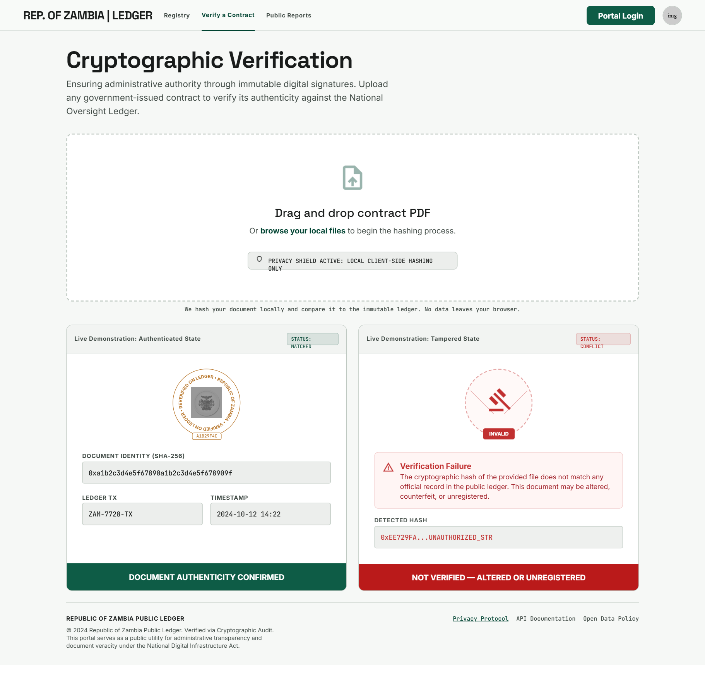

Screen Map & Flows
Every screen, grouped by app, and the primary journeys that connect them. Click any node to open the prototype; arrows show the intended path. Nav, sidebars and buttons inside each screen are wired to these same routes.
Key user flows
Public · verify a contract
Public · explore spending
Public · live ledger
Oversight · flag → case
Oversight · ghost project
Oversight · confirm field evidence
Designed in Stitch (hi-fi)

P1 Landing

P3 National map

P4 Constituency

P5 Project detail

P6 Verification portal
Public portal (PUB)
LandingP1National dashboardP2National mapP3ConstituencyP4Project detailP5Verify portalP6Procurement riskP7Open dataP8AboutP9Audit trailP10
Oversight console (OVS)
LoginO1Risk dashboardO2Contract listO3Contract detailO4Supplier networkO5Ghost queueO6DisbursementO7Verif. reviewO8Doc verifyO9CasesO10AnalyticsO11ReportsO12NotificationsO13